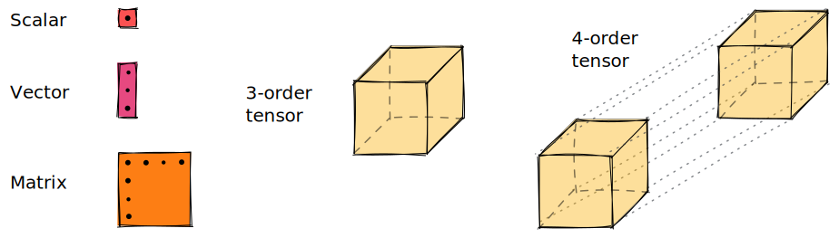

Tensors
There are many jokes[1] about how to define a tensor. The definition we are giving here might not be the most correct one, but it is good enough for our use case (don't kill me please, mathematicians). A tensor $T$ of order[2] $n$ is a multilinear[3] application between $n$ vector spaces over a field $\mathcal{F}$.
\[T : \mathcal{F}^{\dim(1)} \times \dots \times \mathcal{F}^{\dim(n)} \mapsto \mathcal{F}\]
In layman's terms, it is a linear function whose inputs are vectors and the output is a scalar number.
\[T(\mathbf{v}^{(1)}, \dots, \mathbf{v}^{(n)}) = c \in \mathcal{F} \qquad\qquad \forall i, \mathbf{v}^{(i)} \in \mathcal{F}^{\dim(i)}\]
Tensor algebra is a higher-order generalization of linear algebra, where scalar numbers can be viewed as order-0 tensors, vectors as order-1 tensors, matrices as order-2 tensors, ...
Letters are used to identify each of the vector spaces the tensor relates to. In computer science, you would intuitively think of tensors as "n-dimensional arrays with named dimensions".
\[T_{ijk} \iff \mathtt{T[i,j,k]}\]
The Tensor type
In Tenet, a tensor is represented by the Tensor type, which wraps an array and a list of symbols. As it subtypes AbstractArray, many array operations can be dispatched to it.
You can create a Tensor by passing an array and a list of Symbols that name indices.
julia> Tᵢⱼₖ = Tensor(rand(3,5,2), (:i,:j,:k))3×5×2 Tensor{Float64, 3, Array{Float64, 3}}: [:, :, 1] = 0.730756 0.0551562 0.691414 0.897057 0.926148 0.13583 0.700751 0.936875 0.602816 0.0478079 0.353513 0.977227 0.957142 0.442723 0.765999 [:, :, 2] = 0.802157 0.817749 0.416546 0.849123 0.350456 0.0115366 0.374316 0.928338 0.0300156 0.070788 0.033659 0.231368 0.370855 0.776213 0.717524
The dimensionality or size of each index can be consulted using the size function.
Base.size — MethodBase.size(::Tensor[, i])Return the size of the underlying array or the dimension i (specified by Symbol or Integer).
julia> size(Tᵢⱼₖ)(3, 5, 2)julia> size(Tᵢⱼₖ, :j)5julia> length(Tᵢⱼₖ)30
Operations
Contraction
Tenet.contract — Methodcontract(a::Tensor[, b::Tensor]; dims=nonunique([inds(a)..., inds(b)...]))Perform tensor contraction operation.
Factorizations
LinearAlgebra.svd — MethodLinearAlgebra.svd(tensor::Tensor; left_inds, right_inds, virtualind, kwargs...)Perform SVD factorization on a tensor.
Keyword arguments
left_inds: left indices to be used in the SVD factorization. Defaults to all indices oftexceptright_inds.right_inds: right indices to be used in the SVD factorization. Defaults to all indices oftexceptleft_inds.virtualind: name of the virtual bond. Defaults to a randomSymbol.
LinearAlgebra.qr — MethodLinearAlgebra.qr(tensor::Tensor; left_inds, right_inds, virtualind, kwargs...)Perform QR factorization on a tensor.
Keyword arguments
left_inds: left indices to be used in the QR factorization. Defaults to all indices oftexceptright_inds.right_inds: right indices to be used in the QR factorization. Defaults to all indices oftexceptleft_inds.virtualind: name of the virtual bond. Defaults to a randomSymbol.
LinearAlgebra.lu — MethodLinearAlgebra.lu(tensor::Tensor; left_inds, right_inds, virtualind, kwargs...)Perform LU factorization on a tensor.
Keyword arguments
left_inds: left indices to be used in the LU factorization. Defaults to all indices oftexceptright_inds.right_inds: right indices to be used in the LU factorization. Defaults to all indices oftexceptleft_inds.virtualind: name of the virtual bond. Defaults to a randomSymbol.
- 1For example, recursive definitions like a tensor is whatever that transforms as a tensor.
- 2The order of a tensor may also be known as rank or dimensionality in other fields. However, these can be missleading, since it has nothing to do with the rank of linear algebra nor with the dimensionality of a vector space. We prefer to use word order.
- 3Meaning that the relationships between the output and the inputs, and the inputs between them, are linear.